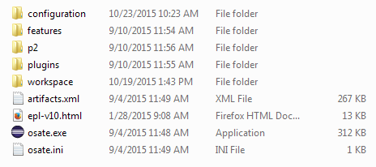
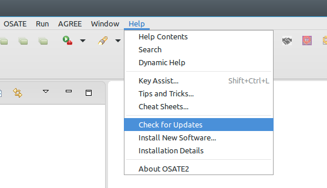

Download and Installation¶
The latest OSATE release can be downloaded from here.
New Installation¶
OSATE is available for Windows (32-bit and 64-bit), Mac OSX (64-bit), and Linux (64-bit). As a prerequisite Java 8 is required; in the following we assume that it is already installed. See here for help with installing Java.
To install OSATE, download the archive file for your platform from the OSATE download site (see below), choose an installation directory and unpack the archive file there. The installation directory contains a platform specific executable (osate.exe / osate.app / osate) that can be used to start the OSATE.
Detailed Installation for Windows¶
The OSATE distribution for Windows is packaged as a zip file, e.g.,
osate2-2.2.1-vfinal-win32.win32.x86.zip for the 32-bit version and
osate2-2.2.1-vfinal-win32.win32.x86_64.zip for the 64-bit version. Which
of these is needed depends on the installed Java version: 32-bit Java
must use 32-bit OSATE and 64-bit Java must use 64-bit OSATE. To test
which one is installed, run java -version in cmd.exe. The following
output indicates 32-bit Java.
C:\Users\lwrage>java -version
java version "1.8.0_51"
Java(TM) SE Runtime Environment (build 1.8.0_51-b16)
Java HotSpot(TM) Client VM (build 25.51-b03, mixed mode, sharing)
A 64-bit Java will output “64-bit Server VM” instead of “Client VM”.
After downloading the appropriate zip file from the OSATE download site, extract the zip file to an empty target directory, e.g., C:\Tools\OSATE. After extraction the target directory will contain some sub-directories and files, including osate.exe:

OSATE Directory Layout
Updating OSATE¶
An existing OSATE installation can be updated when a new maintenance release has been published. We support updates within the same OSATE version from the final release to a maintenance release and from one maintenance release to the next. For example,
2.2.1.vfinal -> 2.2.1.vupdate01 -> 2.2.1.vupdate02 -> ...
To start the update process, use the check for updates entry in the help menu in OSATE and follow the instructions in the dialog.

Download Locations¶
Stable Versions¶
A new stable version is released every 3 months. You can install it from an existing Eclipse installation using the update site or just by installing the complete product. The product is a fully integrated and tailored Eclipse environment with all OSATE functions. The products are available for Windows, Linux and Mac OS X.
All available versions can be found at the following locations.
- Product: http://aadl.info/aadl/osate/stable/
- Update sites: http://aadl.info/aadl/osate/stable/
Testing Version¶
The testing version is built on a nightly basis. It includes the latest fixes but also some unstable code related to features being developed. While it might be useful to use it for some projects, please think about using it for production purpose due to potential unstable features.